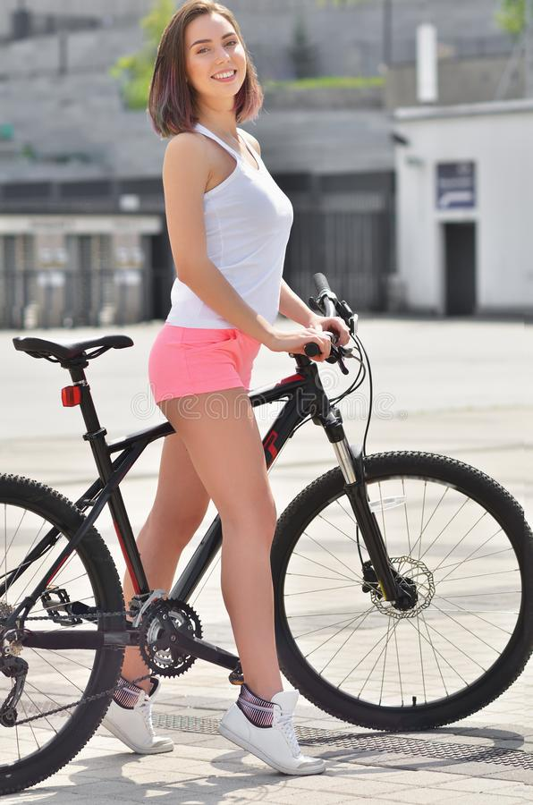

Казвам се Павлин и съм от град Враца. Моето хоби е карането на колело. За пръв път се качих на колело когато бях на 5 години и оттогава се запалих по колоезденето. Любими места ,които обичам да посещавам с колелото са хижата и пътя за пещерата "Леденика".